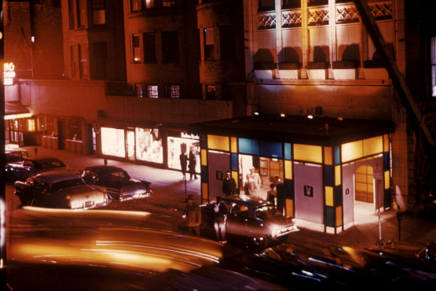
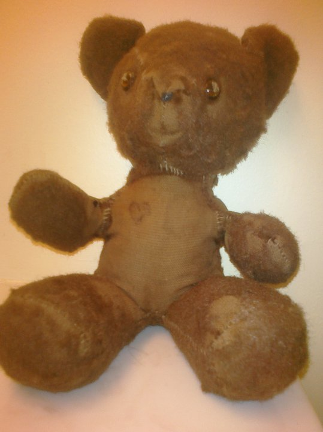
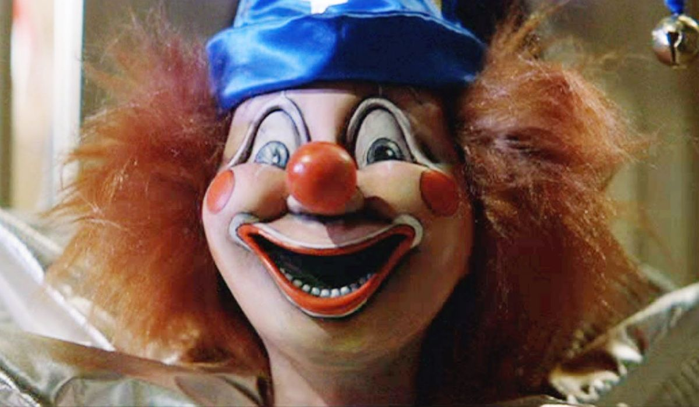
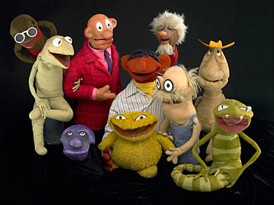

I was believed to be conceived at the Playboy Towers Hotel in Chicago.

When I little, I was rarely seen without my stuffed bear. My mom received him as a shower gift. I named him Franklin. Though he has had several "operations" and has lost most of his hair, I still love him.
My folks owned an ice cream parlor on the north end of St. Charles Main Street when I was a kid. It was called Sticky Icky and named after me. They sometimes called me Ick or Icky as a shortened form of Eric.
Some of the other nicknames I've been given over the years... Mooch, Bugsy, Ham, Hammer, Bubba Gump.
I still have a vivid memory of a nightmare I had when I was 6. R2-D2 was chasing me, but I got away by running up some stairs.

My first concert was Culture Club in 1984. It was the Colour by Numbers tour. We sat front row and I slept through the opener, The Mistakes.

I used to have a stuffed clown that was as big as me. After seeing Poltergeist for the first time, I made my parents get it out of my bedroom.
In Junior High, my alarm clock woke me every morning with "Helloooo Baaaaabee" from a Chantilly Lace cassette single.
In 8th grade, I broke my arm roller skating. I had a green stick fracture of both the radius and ulna of my right arm. Those are my only broken bones. After I healed, I put the quads back on and skated at the rink as often as 2-4 times a week through high school and beyond. I even bought my own skates instead of renting. I still use those skates over 20 years later.
I think that the world is a better place because of Jim Henson and his creations.
Ray Bradbury's Illustrated Man is one my favorite books.

In high school, I was in inducted to the International Thespian Society. I earned all my points without ever being in the cast. I still enjoy the theatre. My wife and I have had season tickets to the Fox and the Muny for several years.
Also in high school, a photograph I took and developed myself was featured in the school's literary magazine.
When I go to flea markets, I look for old hotel keys/keychains. My favorite one is from a St Louis hotel and is so old the numbered key looks like a skeleton key.

I had five stitches on my right hand after I cut myself with a very sharp knife. Never needed stitches for anything else.
I went to Las Vegas for the first time on my 21st birthday with my family to attend Pizza Expo and won a thousand coin jackpot at Luxor.
I went back to Vegas exactly 10 years later for my 31st. This time as part of a roadtrip that included 4 National Parks, 5 states, some very good friends, and a rented minivan.
In 2001, I was ordained on the interwebs. Sixteen years later, I officiated a wedding for my cousin.